Gute Quellenlage, geringe Außenwirkung, interner Kontext. Antwort kann direkt verwendet werden.
Beispiele: Zusammenfassung interner Memos, Recherche in Produkthandbüchern, Suche in Projektakten.
Geschäftlich relevant, unklare Belegkette oder externe Adressaten. Mensch gibt frei.
Beispiele: Kundenkommunikation, Angebotsbausteine, Vertragsentwürfe, Lieferantenanfragen.
Recht, Medizin, Personalentscheidungen, personenbezogene Daten in sensiblem Kontext, IT-Security. Hier antwortet die KI gar nicht — der Vorgang wird an einen verantwortlichen Menschen übergeben.
Beispiele: Arbeitsrechtliche Bewertungen, Krankheitsdiagnosen, Bewerberauswahl, Zugriffsentscheidungen, behördliche Auskünfte.
Was steckt drin
Klassifikation
Jede Antwort durchläuft vor der Ausgabe einen Risk Classifier: Er bewertet Domäne (Recht, Medizin, HR, Finanzen, Security), Adressatenkreis (intern / extern / Behörde) und Belegqualität (vollständig / lückenhaft / fehlend). Die Ampelfarbe ergibt sich aus dieser Matrix.
Compliance-Mapping
Stopp-Kategorien sind direkt auf regulatorische Vorgaben abgebildet: EU AI Act Anhang III (Hochrisiko-Systeme), DSGVO Art. 22 (automatisierte Einzelentscheidungen), §203 StGB (Berufsgeheimnisse — relevant für Anwalts-, Steuerberater- und Arztkanzleien), branchenspezifische Regeln wie BRAO oder ärztliche Schweigepflicht.
Audit
Jede Klassifikation, jede Freigabe und jede Stopp-Entscheidung wird versioniert geloggt. Der Datenschutzbeauftragte und die interne Revision bekommen einen vollständigen Vorgangs-Stempel — wer hat wann mit welcher Quellenlage was freigegeben.